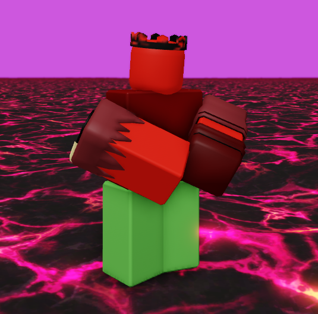

NoMorePlayersLULZ // RECOVERY.sys
База данных активных учетных записей. Обнаружены следующие профили:

OBJECT: ER_44
КЛАСС: MAIN
СТАТУС: NORMAL

OBJECT: K0_X7
КЛАСС: VIRUS
СТАТУС: ACTIVE
Архивные текстовые данные о субъектах системы NoMorePlayersLULZ:
[ДАННЫЕ_ER_44]
Субъект ER_44 является ключевым элементом стабильности текущего сервера. Проявляет аномально высокий уровень владения клинковым оружием формата R6. По заверению очевидцев, он остаётся единственным, кто пытается противостоять заражению исходного кода. Все попытки вируса переписать его статус пока что блокируются внутренней защитой.
[ПРОЦЕСС_K0_X7]
Несанкционированный фоновый скрипт. Известен среди уцелевших как «ШВЫ». Проникает в игровые сессии под видом критических графических багов. Буквально выворачивает наизнанку аватары пользователей, заменяя их данные повреждёнными строками кода. На данный момент стёр информацию о 98% игроков.
Доступ к логам сервера заблокирован внешним процессом K0_X7.
ВВЕДИТЕ ДЕКОДИРОВАННЫЙ КЛЮЧ С ДИСКОРД-СЕРВЕРА:
Архив системных утилит. Все внешние зеркала отключены.
[ДАННЫЕ_ЗАБЛОКИРОВАНЫ]
Разгадайте шифр во вкладке "Логи", чтобы восстановить соединение с облачным диском.